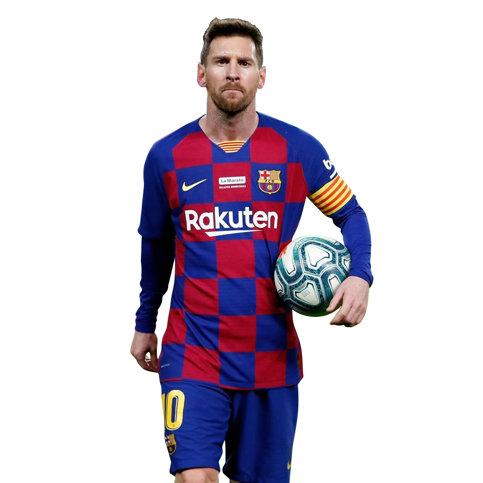

Récord Guiness goleador en un año natural (91 goles).
Máximo goleador histórico de selecciones en Sudamérica.

Jugador de la historia del FC Barcelona con más partidos disputados.
Jugador de la historia del FC Barcelona con más títulos.
Máximo goleador en una misma temporada LaLiga (50 goles).
Máximo goleador histórico de Champions con un mismo club.
Jugador con más partidos disputados en la historia con Argentina.
Máximo goleador argentino en partidos oficiales.
Máximo goleador histórico de la selección argentina.
91: Los goles de Messi en un año natural.
En el año 2012 de Leo Messi fue estratosférico. El argentino sumó 91 goles en todo el año natural: 79 con el Barça (59 en la Liga, 13 en Champions, 5 en la Copa del Rey y dos en la Supercopa de España) y 12 con la selección argentina.
Messi convirtiéndose en el máximo goleador del Barcelona en su historia
El 20 de marzo de 2012 por la fecha 29 de la Liga Española. Barça le ganó al Granada 5 – 3 con una tripleta de Lionel Messi. El argentino llegó en ese partido a 234 goles y superó los 232 de César Rodríguez, jugador español de los años 40 y 50. La ‘Pulga’ logró esta marca cuando solo tenía 24 años.
Lionel Messi, máximo goleador histórico de selecciones sudamericanas.
El capitán de la selección argentina, Lionel Messi, con un triplete ante Bolivia batió un récord más en el fútbol al convertirse en el máximo goleador histórico de las selecciones sudamericanas con 79 tantos, superando al legendario Pelé.